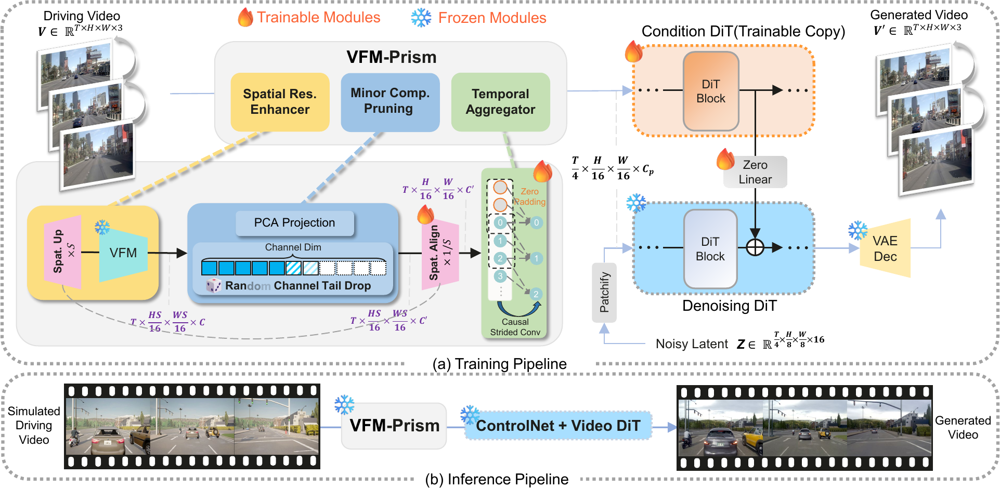

Drag the slider to compare simulation input (left) with our DwD output (right). Use the arrows to browse different scenes.
Driven by the emergence of Controllable Video Diffusion, existing Sim2Real methods for autonomous driving video generation typically rely on explicit intermediate representations to bridge the domain gap. However, these modalities face a fundamental Consistency-Realism Dilemma. Low-level signals (e.g., edges, blurred images) ensure precise control but compromise realism by "baking in" synthetic artifacts, whereas high-level priors (e.g., depth, semantics, HDMaps) facilitate photorealism but lack the structural detail required for consistent guidance.
In this work, we present Driving with DINO (DwD), a novel framework that leverages Vision Foundation Module (VFM) features as a unified bridge between the simulation and real-world domains. We first identify that these features encode a spectrum of information, from high-level semantics to fine-grained structure. To effectively utilize this, we employ Principal Subspace Projection to discard the high-frequency elements responsible for "texture baking," while concurrently introducing Random Channel Tail Drop to mitigate the structural loss inherent in rigid dimensionality reduction, thereby reconciling realism with control consistency. Furthermore, to fully leverage DINOv3's high-resolution capabilities for enhancing control precision, we introduce a learnable Spatial Alignment Module that adapts these high-resolution features to the diffusion backbone. Finally, we propose a Causal Temporal Aggregator employing causal convolutions to explicitly preserve historical motion context when integrating frame-wise DINO features, which effectively mitigates motion blur and guarantees temporal stability.
Extensive experiments show that our approach achieves State-of-the-Art performance, significantly outperforming existing baselines in generating photorealistic driving videos that remain faithfully aligned with the simulation.

Compare our DwD method with other Sim-to-Real approaches. Use the dropdown to select different methods, and drag the slider to compare with the simulation input. Use the arrows to browse different scenes.
Our method can generate long driving videos with consistent quality. Compare different methods on a long driving sequence.
Our method generalizes to novel viewpoints rendered from reconstructed bird-eye view meshes without any fine-tuning.
Detailed visual comparisons of our method against baselines across different scenarios.

@article{park2021nerfies,
author = {Park, Keunhong and Sinha, Utkarsh and Barron, Jonathan T. and Bouaziz, Sofien and Goldman, Dan B and Seitz, Steven M. and Martin-Brualla, Ricardo},
title = {Nerfies: Deformable Neural Radiance Fields},
journal = {ICCV},
year = {2021},
}